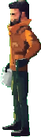
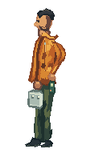
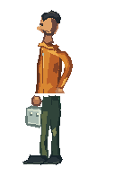
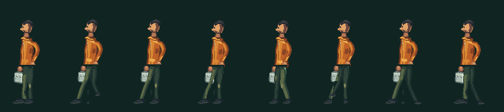

阶段四 / 短行走样片
接触、抬脚、前摆、跟脚。
八帧只验证一件事：四个负重姿态能否形成同一方向的连续行走。左向行走使用完整像素帧，移动距离、朝向和脚底接触分别记录。
当前状态：视觉未通过，保留为失败对照。 行为和文件检查通过，不代表人物或动作合格。正式首页不使用这套角色。
先对齐同一个人，再谈行走
三张按原生像素放入 128 × 196 对照区域，脚底对齐 y = 183。原画保留 52 × 174 尺寸，偏移 (38, 10)，不拉伸。此处展示差异，不是新的修正版。



失败帧检查（最多 3×）
默认不自动播放；播放只用于检查节奏。系统开启“减少动态”时保持静止。
原生尺寸接触表
